A single-page intelligence hub that automatically aggregates, filters, and summarizes regulatory activity across seven compliance frameworks — refreshed every day.
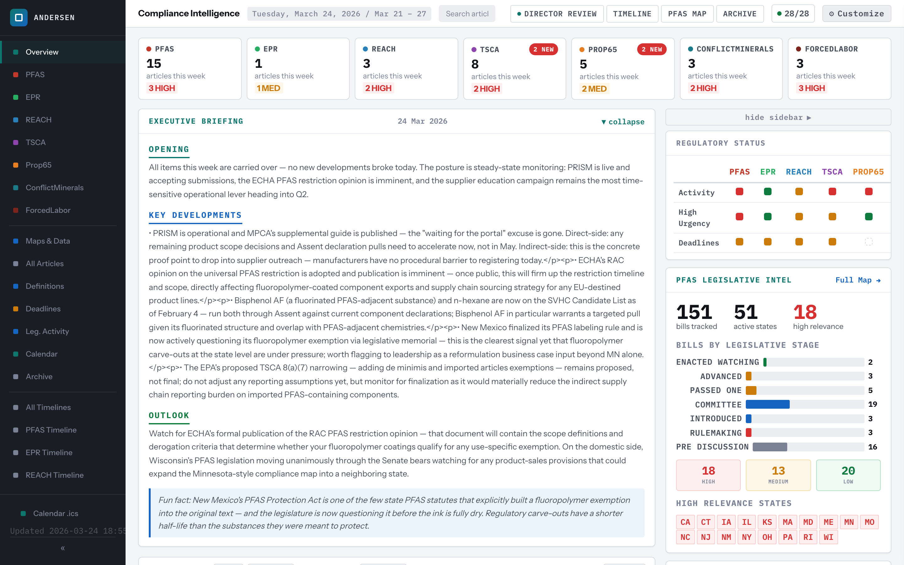
Your full regulatory picture, prioritized and ready to act on.
Start each session by scanning the eight topic cards at the top — red HIGH badges signal where to focus first, and NEW badges on TSCA and Prop65 mean unreviewed updates are waiting. In the center, expand the Executive Briefing's Key Developments section by clicking its toggle to surface this week's most consequential shifts across all seven regulatory domains. On the right sidebar, check the Bills by Legislative Stage counts and the High Relevance States map to gauge whether momentum is building in jurisdictions that affect your supply chain. Use the left navigation to jump directly to any topic section, or hit the top tabs to shift into Timeline, PFAS Map, or Archive mode.
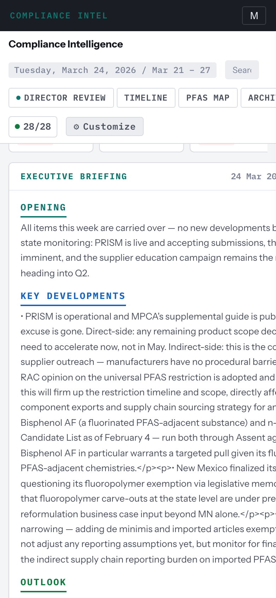
Full compliance intelligence accessible on any device, no compromise.
On mobile, tap the menu toggle (M) in the top right to access navigation links — the left-rail menu is hidden by default to preserve screen space. Swipe the tab row horizontally to reach DIRECTOR REVIEW, TIMELINE, PFAS MAP, and ARCHIVE without losing your place in the briefing below. The green 28/28 badge confirms all panels are active; tap the gear icon next to it to open the Customize drawer and hide any sections irrelevant to your current review session. Scroll vertically through OPENING, KEY DEVELOPMENTS, and OUTLOOK in sequence — all content reflows cleanly without horizontal scrolling.
Jump instantly to any of the seven regulatory topic areas, or customize which panels are visible using the dashboard drawer.
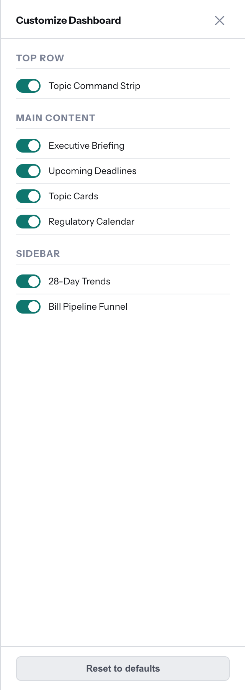
Tailor your dashboard layout to match how your team actually works.
Open the Customize drawer by clicking the gear icon near the top of the dashboard. Toggle any panel off using its teal switch — switches turn gray when a panel is hidden, and your layout saves automatically on close, so it will persist at your next login. Organize your review by role: a supply chain lead might hide the Legislative Activity panel while keeping PFAS Map and Deadlines front and center. If your layout starts to feel cluttered after several sessions of tweaking, click Reset to defaults at the drawer's base to restore all eight panels at once.
Every pipeline run generates a fresh AI-authored summary of the week's most significant regulatory developments — ready to share in a leadership meeting.
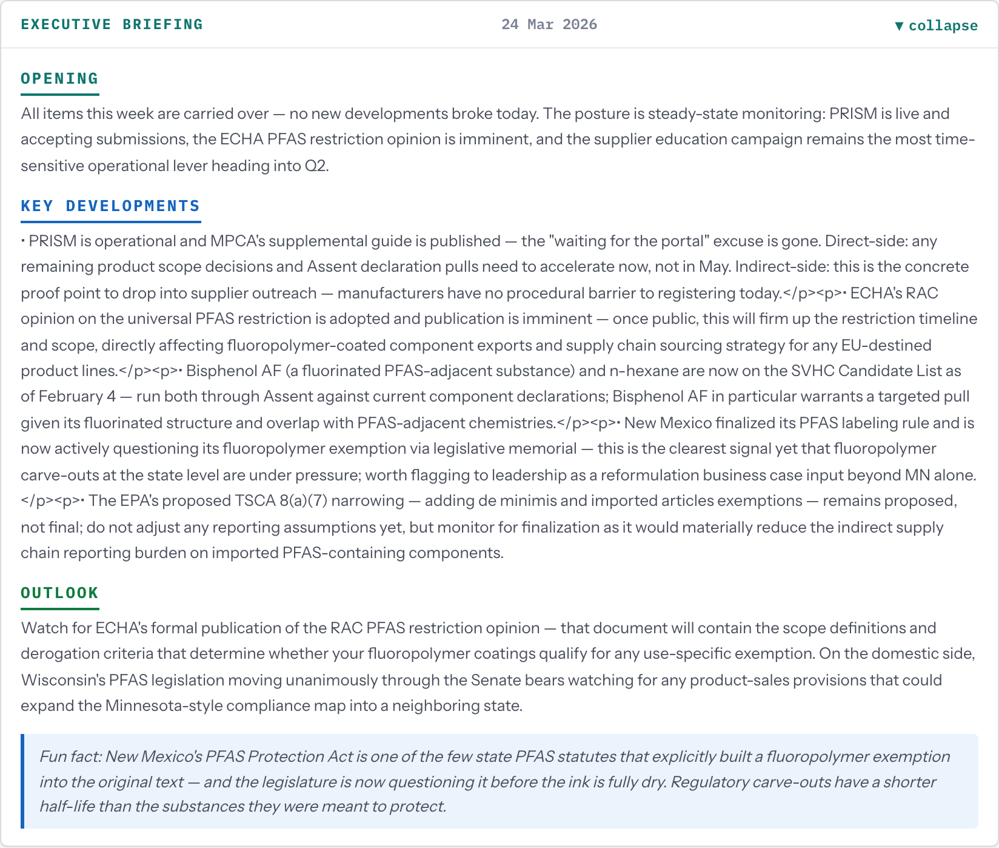
AI-synthesized briefing across all seven regulations, collapsed into what matters.
Open the Key Developments section first — it's where the AI surfaces concrete regulatory shifts with inline tags marking company-specific implications, so you can scan for product-line relevance without reading the full briefing. Use the Outlook section to identify forward-looking watchpoints that don't yet appear in the deadline tracker but will require early preparation. Collapse the entire panel using the triangle icon in the top right once you've completed your review, freeing vertical space for the data panels below. Because the briefing regenerates with each run, compare this week's Outlook language to last week's to detect shifts in regulatory posture that individual articles might not surface.
Each topic section surfaces curated regulatory articles with per-article AI company-impact analysis — filtered from hundreds of sources down to what matters for this company.
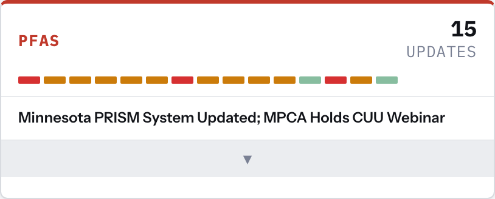
Fifteen PFAS updates visualized by urgency — know exactly where to read first.
Read the timeline bar strip left to right — red bars represent the highest-urgency developments and should be your first clicks. Click any colored bar to jump to that article and its source link in the panel below; the article title and a brief description will load automatically. Click the triangle dropdown beneath the headline to expand the full impact classification and supply chain or direct operations relevance for that item. Use the density and color distribution of the bars as a weekly signal: a cluster of red bars in a short span means multiple high-priority developments landed simultaneously and likely warrant cross-referencing against your deadline tracker.
A merged list of regulatory deadlines and key milestones, sorted by urgency and date — with AI-generated briefings for each deadline available on click.
Thirty-seven compliance deadlines, triaged by urgency and flagged for change.
The collapsed view surfaces the ten most urgent deadlines by default — review any item marked both HIGH and New or Updated first, since these represent obligations that have either recently entered your window or been materially modified. Color priority runs red to amber to green; if you see red items without a response plan attached, that's the gap to close before leaving this panel. Click the expand button in the top right corner to load all 37 items and access filtering options — you'll need the full view to confirm nothing is buried below the default ten. Check this panel at the start of every review session, not just weekly, because Updated badges can appear between runs.
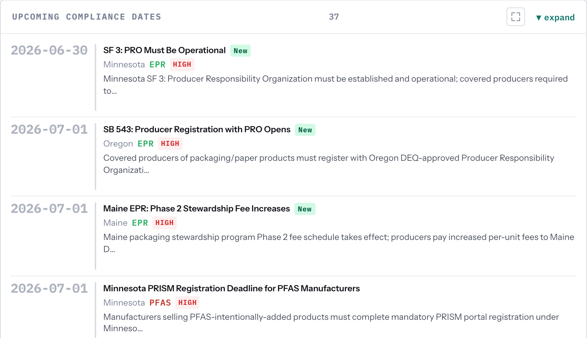
Full deadline inventory with jurisdiction, category, and urgency in one view.
In the expanded list, scan the left-side dates first to identify anything due within 90 days — those entries are your immediate action set regardless of color coding. Use the compliance category badges (EPR, PFAS, REACH) to filter mentally by your team's current workload, then click any entry to open its AI analysis modal for the full impact breakdown. Red HIGH tags combined with green New badges are the most urgent combination: a newly tracked deadline with high impact means your response window may already be shorter than it appears. Click the expand icon in the top right to enter full-screen modal view if the list feels cramped at standard dashboard width.
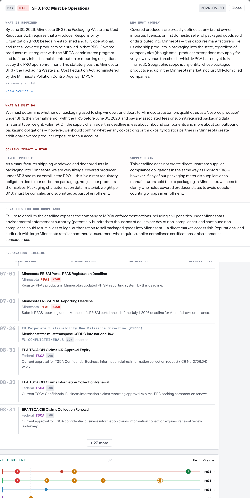
One deadline, fully decomposed — obligations, penalties, and a 90-day action clock.
Start with the Company Impact section: HIGH and SUPPLY CHAIN badges tell you whether this deadline hits your direct operations, your suppliers, or both — that distinction drives who owns the response internally. Read 'What We Must Do' next for your specific enrollment and reporting obligations, then cross-reference the Preparation Timeline's color-coded milestones to confirm your current position against the 90/60/30-day countdown. If a linked upstream deadline appears (such as PRISM PFAS registration), click it to open that deadline's modal and confirm it's already tracked. Use the calendar export button at the modal's base to push this deadline into your team's calendar, and click '+ 27 more' to surface any connected obligations that share this regulatory trigger.
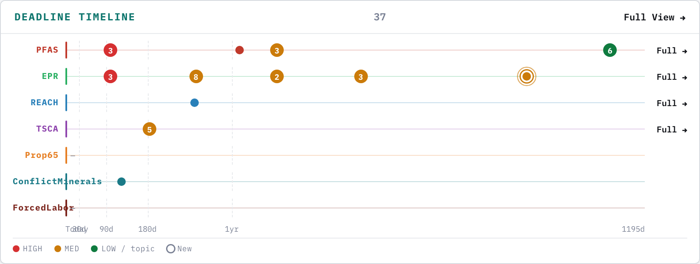
All your deadlines across every topic, laid out in a single swimlane view.
Look for pulsing rings first — they mark newly tracked deadlines that haven't been reviewed yet and should be your opening clicks. Hover over any dot to see the deadline name, date, and urgency level without leaving the swimlane view; click to open the full AI analysis modal. Numbered badges (like '3' on PFAS or '8' on EPR) signal deadline clusters — multiple obligations landing on the same date that likely require coordinated cross-functional response. Click 'Full →' at the end of any swimlane to load that topic's complete deadline schedule, particularly useful when a cluster badge suggests more is happening than the swimlane can display at this zoom level.
729 tracked bills across 51 jurisdictions, filtered to what matters. Click any bill row for an AI analysis covering company impact, passage probability, and recommended next steps.
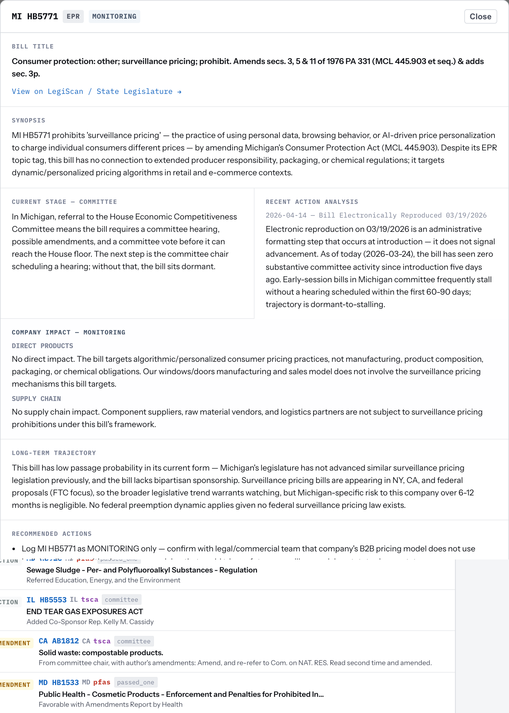
Every bill your team needs to track, scored and decomposed into required actions.
Check the MONITORING tag in the upper right first — if it's present, your team is already tracking this bill and you should focus on the Recent Action Timeline to see what's moved since last review rather than re-assessing from scratch. Read the Company Impact section to confirm whether exposure is direct products, supply chain, or both, then use the passage probability rating to decide whether this warrants escalation to external counsel or trade association engagement. Click 'View on LegiScan / State Legislature' to access the full bill text when the modal's synopsis raises questions about scope or definitions. If MONITORING is absent, use the recommended actions section to determine whether this bill should be added to your tracking queue.
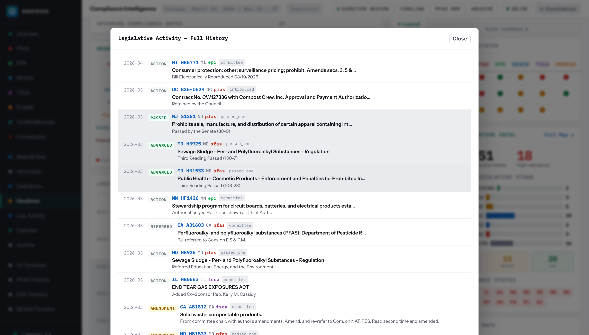
Complete legislative history for every tracked bill, sortable and scannable.
Use the color-coded status badges as your primary scan layer: PASSED (green) and ADVANCED (teal) items require immediate attention, while REFERRED (gray) items can typically wait for the next review cycle. Read the notes below each entry for vote counts, sponsorship changes, or committee referral details — these often signal whether a bill is gaining or losing momentum faster than the status badge alone. If you're reviewing a jurisdiction where several bills are active, sort chronologically and look for entries where the same bill appears multiple times in quick succession, which indicates rapid advancement. Press Escape or click Close to return to the dashboard when done.
Interactive state-by-state maps show the geographic spread of regulatory activity — built automatically from the same legislative data that feeds the dashboard.
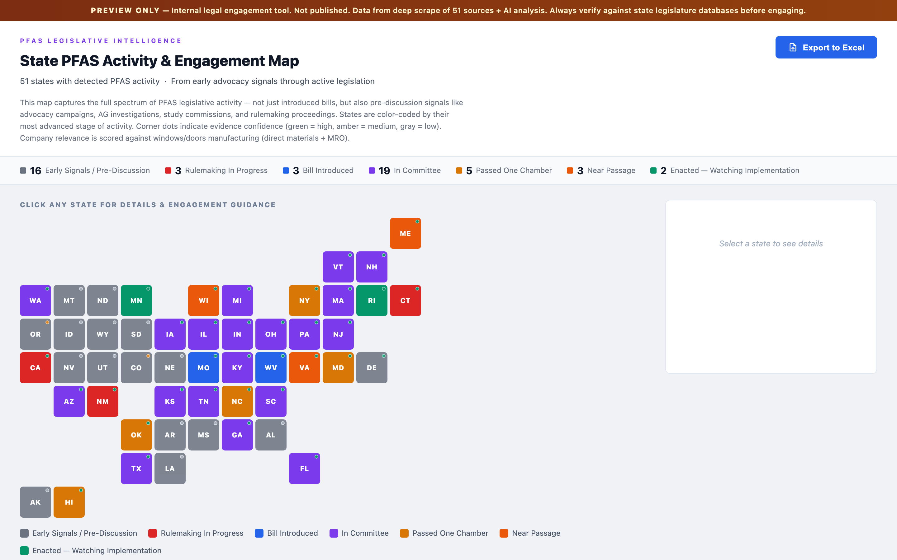
PFAS legislative maturity across all 51 jurisdictions, mapped and exportable.
Start by identifying dark-colored states — these have enacted or near-enacted legislation and represent your most immediate compliance exposure. Click any state tile to load its active bills, most recent legislative actions, and jurisdiction-specific engagement guidance in a detail panel; this is where you'll find the information needed to brief external counsel or trade association contacts. Check the corner dot indicator on each state before acting on the data — amber or gray confidence indicators mean the underlying bill data may be incomplete, and you should verify against LegiScan or the state legislature's site before making portfolio decisions. Use Export to Excel to pull the full dataset for integration with your internal risk register or board reporting templates.
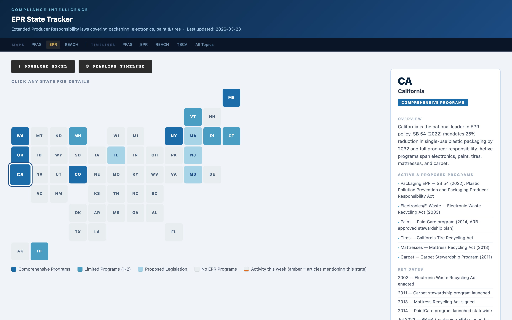
EPR compliance status across all fifty states, from enacted law to no activity.
Use the four-tier color classification as your triage layer: dark blue Comprehensive Program states (like California) require active compliance management now, while light blue Proposed Legislation states require monitoring and early stakeholder engagement. Click any state to open its detail panel — California, for example, will show packaging reduction mandates, electronics recycling requirements, and tire stewardship programs with associated dates. Watch for amber indicators on state tiles, which signal recent activity updates and mean requirements may have changed since your last review. Toggle between Map and Deadline Timeline views using the control at the top to shift from a geographic overview into a chronological action view when you're preparing quarterly compliance calendars.
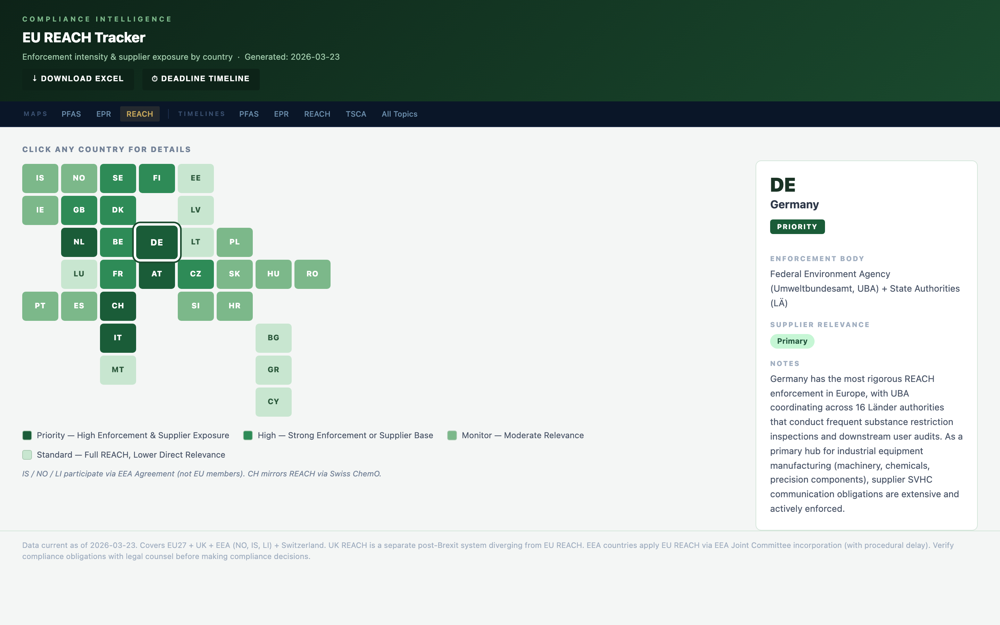
REACH enforcement intensity mapped across EU27 plus EEA, ready for supplier prioritization.
Click the darkest green countries first — Priority-tier jurisdictions have the highest enforcement intensity and greatest supplier exposure, meaning SVHC monitoring and supplier communication strategies should be calibrated to those markets before lighter-shaded ones. When you select a country, read the detail panel's critical notes carefully; jurisdiction-specific guidance often includes enforcement body contacts and supplier relevance classifications that aren't available in your standard SVHC candidate list tools. Use the color gradient as a tiering framework when briefing your supply chain team: suppliers concentrated in dark-green countries should be on an accelerated SVHC disclosure cadence compared to those in pale-green Standard-tier markets. Confirm the generation date shown in the legend before using this map in any board or regulatory submission.
Each topic has a dedicated full-page timeline showing every tracked deadline plotted chronologically — shareable standalone pages linked from the dashboard.
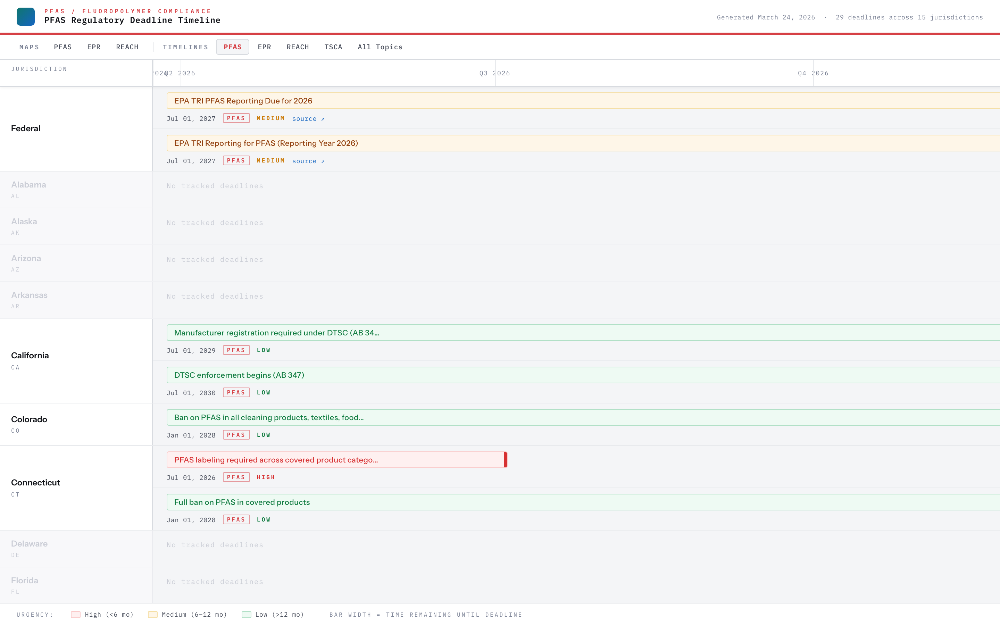
Every PFAS deadline across fifteen jurisdictions, sequenced and urgency-coded.
Scan for red HIGH badges immediately — anything under six months out with a red flag requires an active response plan, not just monitoring. Read the jurisdiction label on the left and the requirement description in the center together; the same deadline type (e.g., reporting enrollment) often carries materially different scope depending on whether you're looking at a state versus federal entry. Click the PFAS tag on any entry to link through to source documentation when the requirement description raises scope questions. Use the filter tabs at the top to narrow by jurisdiction, urgency level, or deadline type — when preparing for a board update, filtering to HIGH only gives you the shortest, most defensible priority list.
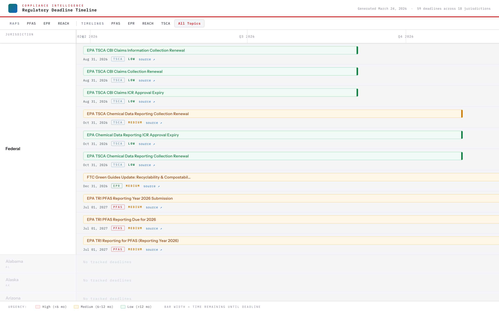
Fifty-nine deadlines across eighteen jurisdictions on one master timeline.
Use the topic filter tabs at the top to reduce the view to only your active compliance domains — with 59 deadlines across 18 jurisdictions, reviewing everything unfiltered is inefficient. Look for clusters of light-pink HIGH bars landing within the same quarter across multiple jurisdictions; those clusters signal periods of peak compliance demand that require advance resource planning. Click any deadline bar to open its full detail: name, due date, regulatory category badge, priority level, and source link. Pay attention to bar width as a runway signal — a HIGH-priority bar that's visually thin means you have very little time remaining even if the calendar date looks deceptively far away.
A separate AI-generated strategic assessment page — scored on usefulness, actionability, and signal-to-noise — with specific improvement recommendations for the compliance team.
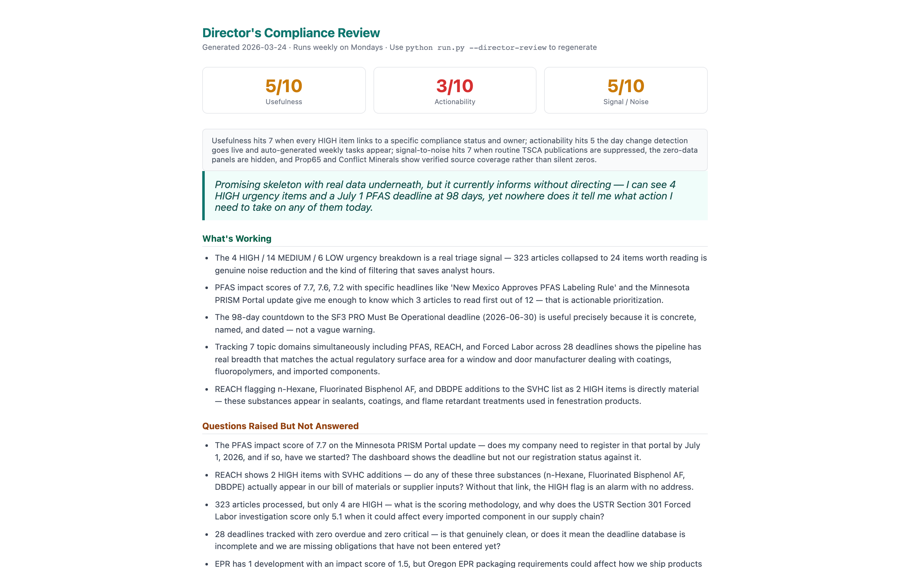
AI self-assessment of your dashboard's usefulness — with specific gaps named.
Read the narrative explanation below the three score cards before reacting to the numbers; a 3/10 Actionability score is only useful if you understand exactly what's driving it — in this case, the system flags that urgency is detected but prioritized actions aren't specified. The 'Questions Raised But Not Answered' section is your most direct guide to what data integrations or customizations would move scores higher — treat each listed gap as a backlog item for your next configuration session. Use the 'What's Working' section to brief stakeholders on current dashboard strengths, particularly if you're in a procurement or renewal conversation about the platform. Items in 'Questions Raised' are ranked by strategic importance, so address them from the top down rather than starting with the easiest.
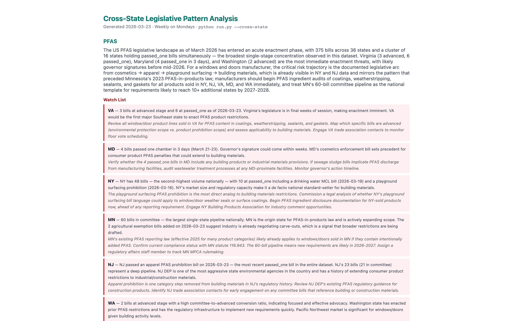
Coordinated PFAS legislative momentum across thirty-six states, with tactical next steps.
Go to the red-highlighted watch list first — Virginia, Maryland, New York, Minnesota, and New Jersey represent the states with the most aggressive near-term timelines, and the product category restrictions listed for each are specific enough to map directly to your portfolio. For each watch-list state, read the italicized action item below its entry; these are tactical steps (audit specific product lines, engage trade associations, track regulatory guidance) that should be assigned to named owners before bills reach final passage. Cross-reference the passage status column (passed_one, advanced) against your current compliance calendar to identify any jurisdiction where you're tracking a bill at a less advanced stage than this report shows. Check the generated timestamp (2026-03-23) and confirm the data is current before using this report in any external filing or board memo.
Built-in analytics panels track coverage trends over time and show how the legislative pipeline is progressing across topics.
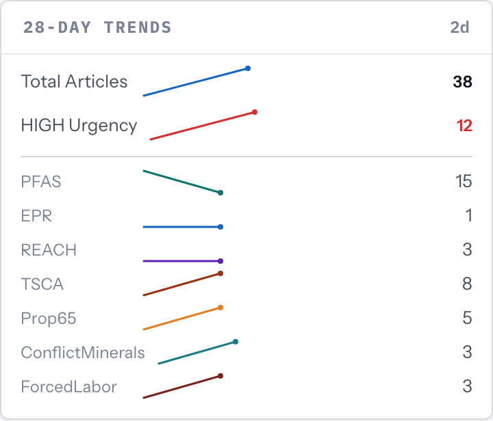
Twenty-eight days of article volume by topic — spot regulatory spikes before they peak.
Look at the slope of each line, not just the endpoint count — a topic with 8 articles but a sharply rising trendline warrants more attention than one with 15 articles on a flat or declining trajectory. The right-side counts give you the current snapshot; use them to benchmark against prior weeks by comparing to your saved briefing archive. If HIGH Urgency and a specific topic (e.g., PFAS) are both trending upward simultaneously, that convergence signals a period of elevated regulatory activity likely to generate new deadlines — open the Deadlines panel and check for recently added items. Use this chart to decide which topics to deep-dive in a given week rather than rotating through all seven by default.
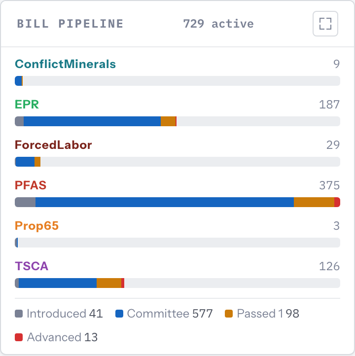
Seven hundred twenty-nine active bills staged across six regulatory topics.
Read each topic row by looking at the red Advanced segment first — bills in that stage are the closest to enactment and have the least time for intervention through trade association engagement or public comment. The stacked bar length shows total bill volume per topic; PFAS at 375 total bills means that domain has significantly more legislative surface area to monitor than others, which should inform how you staff or assign monitoring responsibilities. Compare the Committee-to-Passed ratio across topics: a topic with many Committee-stage bills and few in Passed suggests legislative attrition — watch for sudden movement. Click the expand icon on any topic row to drill into individual bills and filter by stage for focused review.
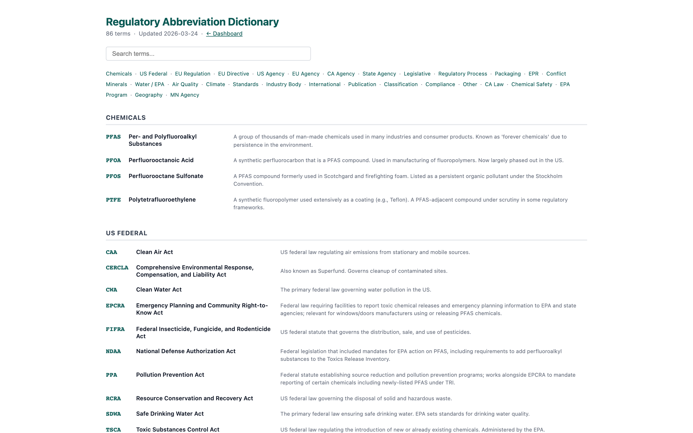
Eighty-six regulatory terms defined in context, searchable by category.
Use the search bar for point lookups when a briefing or bill text references an unfamiliar abbreviation — it's faster than filtering by category and returns results instantly. When onboarding a new team member or briefing a cross-functional colleague, click a category tag (US Federal, EU Regulation, State Agency) to generate a focused subset of terms relevant to their domain — this avoids overwhelming them with the full 86-term list. Each entry includes practical context about how the regulation or chemical applies to your industry, not just the formal definition, so read the explanatory text rather than stopping at the acronym expansion. Check the last update date on any entry before using a definition in a regulatory submission or board document.